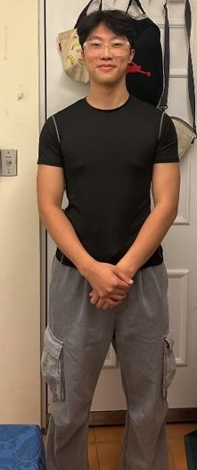
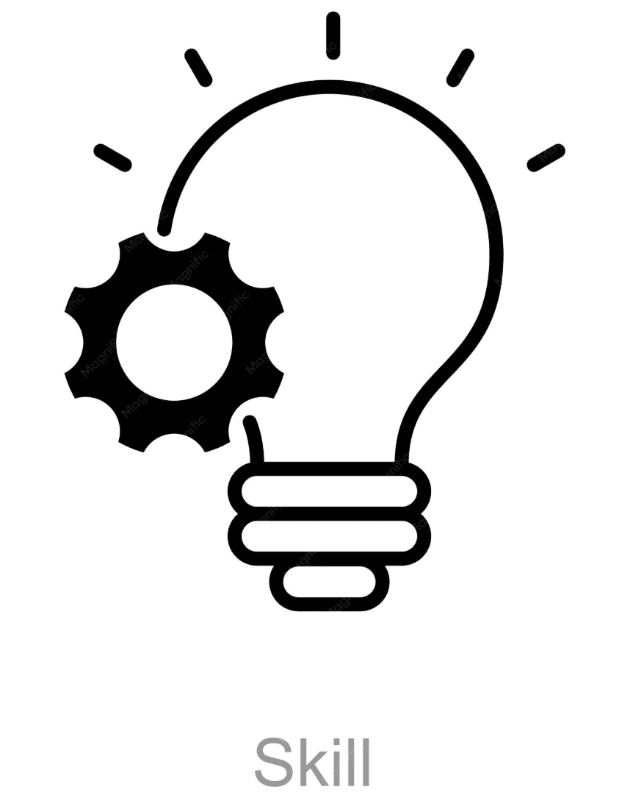
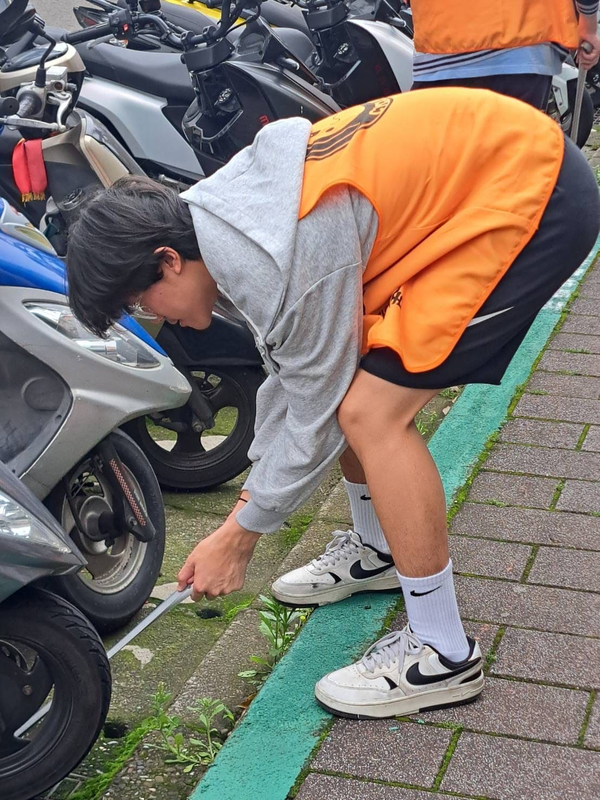
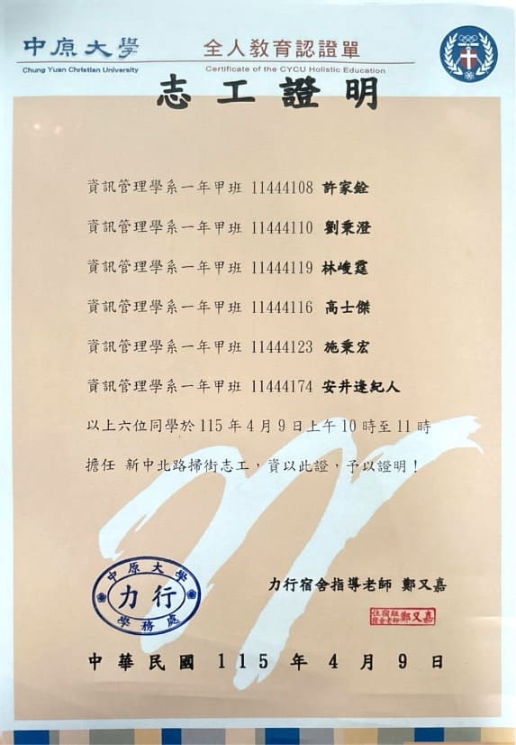

企業概論 - 桃園一日遊行程規劃專案
大一上
在此專案中，我與同學共同創立了「拾途旅行」學生專案小組。我扮演核心企劃與實地考察的角色，親自前往桃園忠貞新村、異域故事館等地進行市場調查與場勘。在過程中，我學習到了如何撰寫新聞稿與完整的商業企劃書，並成功整合在地文化與商業模式，提升了我的專案統籌與實務執行能力。
「持續做對的事就會有好的結果」

個性：樂觀、開朗。
個人特質：具備良好的邏輯思維能力與團隊合作精神。
興趣：各項球類運動、看F1賽車。
優缺點：解決問題能力佳，但在陌生場合較為內斂、謹慎。
我的 GitHub

專業與技能大一上
在此專案中，我與同學共同創立了「拾途旅行」學生專案小組。我扮演核心企劃與實地考察的角色，親自前往桃園忠貞新村、異域故事館等地進行市場調查與場勘。在過程中，我學習到了如何撰寫新聞稿與完整的商業企劃書，並成功整合在地文化與商業模式，提升了我的專案統籌與實務執行能力。
大一上
在新生盃籃球賽中，我與系上同學組成隊伍，利用課餘時間進行密集的戰術演練與體能訓練。與隊友建立深厚的團隊默契。雖然最終我們在八強賽中遭遇強敵惜敗，未能順利晉級，但這次經驗讓我深刻體會到團隊溝通與抗壓性的重要。我學到在面對落後或高壓情況下，如何快速調整心態並與團隊共同解決問題，這些寶貴的合作經驗，將是我未來人生的助力。
大一下
落實『力行』宿舍的精神，從自己生活的小地方做起。看到新中北路上菸蒂較多，我們希望讓這條陪伴我們大學生活的街道恢復整潔，所以以力行學生的身分，針對宿舍前新中北路人行道進行整潔維護，透過清除菸蒂與垃圾，主動提升校園周邊的步行環境品質。

